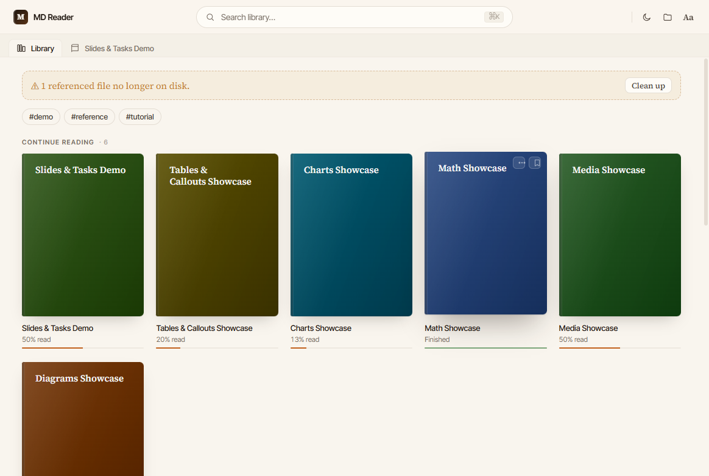
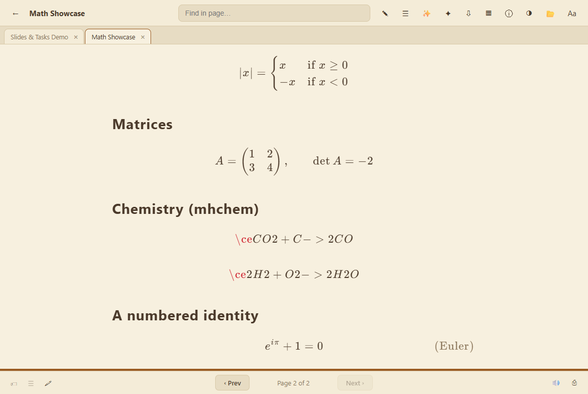
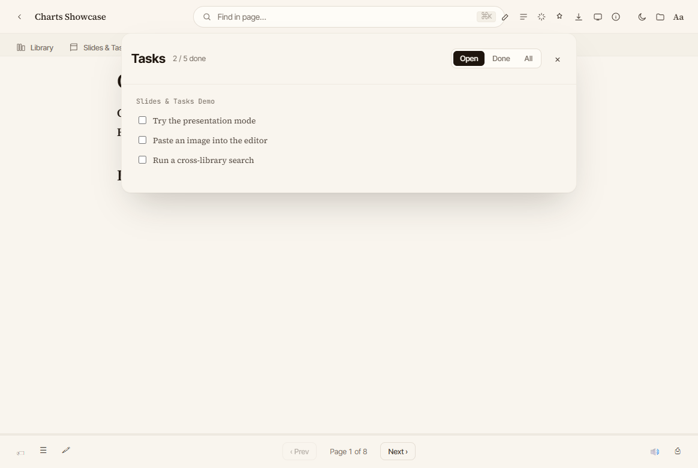
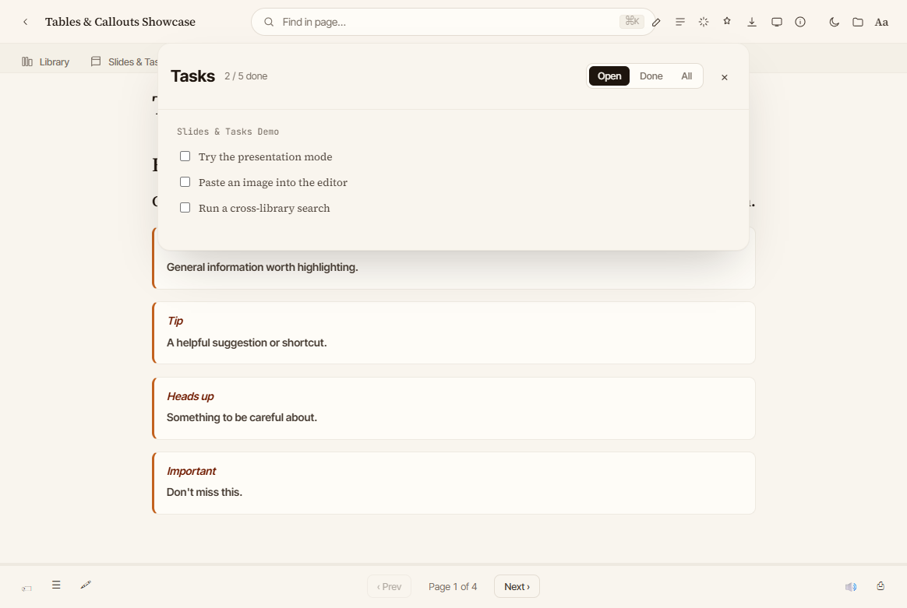
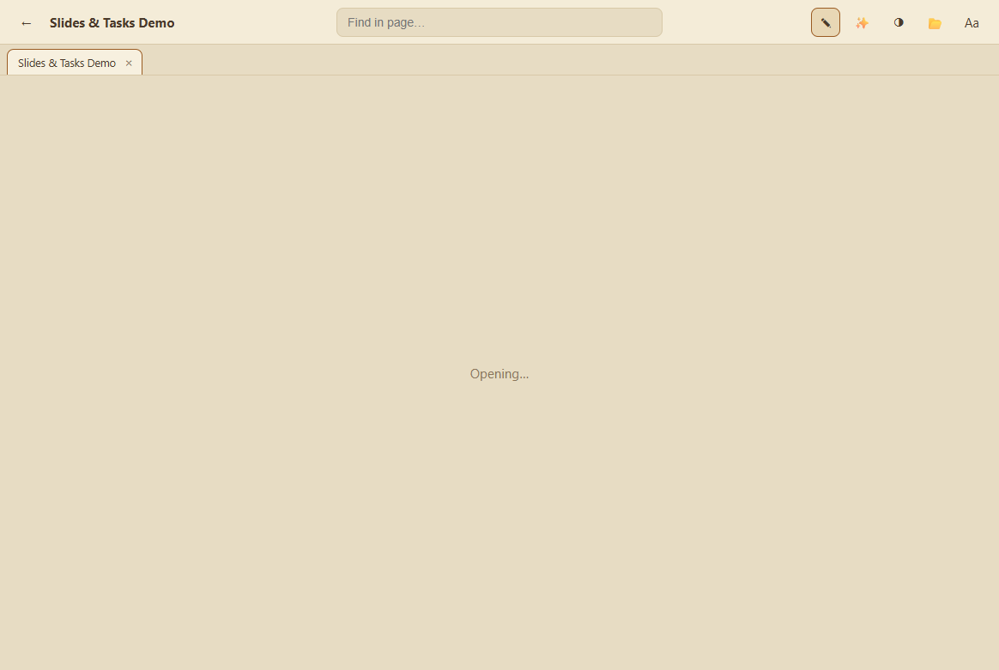
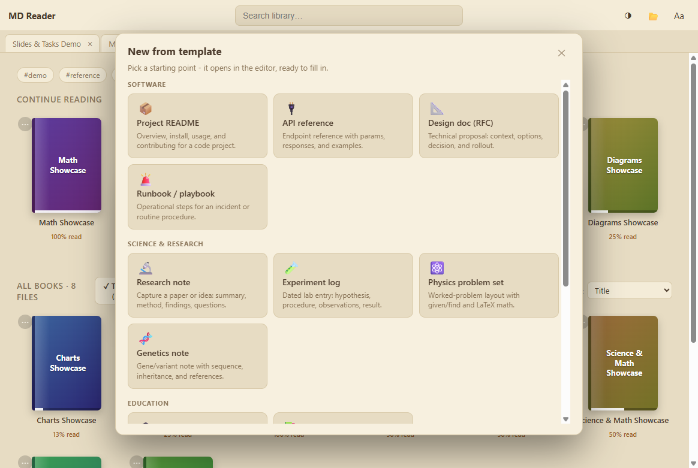
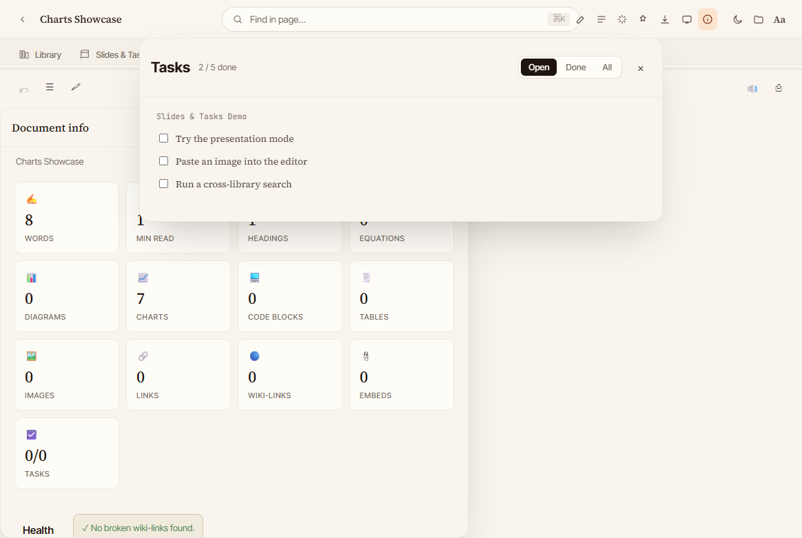

Everything in your notes, beautifully rendered
📐 Math & science
KaTeX math with per-equation copy/expand, Mermaid diagrams, and safe declarative charts.
📚 A real library
A managed vault, folders, import, recent-folder navigation, tags, and a graph view.
🔎 Powerful search
Operators like tag:, has:math, content: with previews.
✍️ Editor & templates
Live editor, slash menu, CSV↔table, and 15 curated note templates.
🧠 Study tools
Highlights & notes, flashcards with spaced repetition, and a document-info panel.
🔒 Private by design
Offline-first, sandboxed file access, blocked remote images, and encrypted AI keys.
See it in action






Optional AI — bring your own key
Connect Anthropic, OpenAI, or any OpenAI-compatible / Ollama endpoint for a study assistant, repurpose-a-doc, course generation, and README-from-source. Your key is stored encrypted via the OS keychain and never leaves your machine except to call the provider you choose.